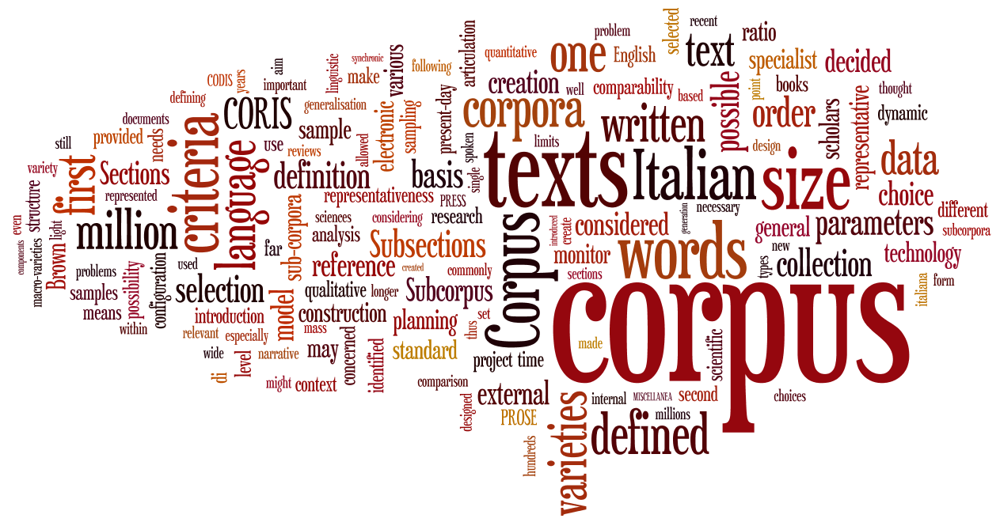
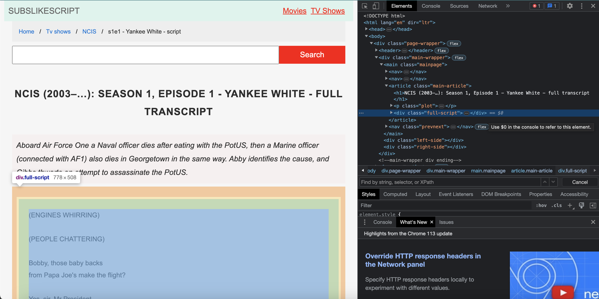

AH-LING203
Corpus Linguistics
Spring 2023
Introduction
R is a programming language created for statistical computing and data visualization. To work with R, we tend to use a environment called RStudio. If you have not installed RStudio yet, follow the instructions that you can find on the data center website. It is important to work in projects to keep your work organized. Create a new project and open a new R Script in there to run the examples from this workshop. If you need help creating a project, you can find some extra info here.
First we’ll go through some of the basics of R before we start making our frequency plot. If you would like some extra information, you can always find some nice tutorials here. We highly recommend you read through sections 2, 3.1-3.4 and 4-6 of A (very) short introduction to R and sections 1-4 of How to make any plot in ggplot2? before starting with R. Don’t worry if you don’t understand anything right away. Most things will become clear when you start working on it.
Everything that is not a comment will be seen as executable code. If we place a single hashtag before anything, it will turn green and become a comment. You can run a piece of code by selecting it and pressing Control+Enter for Windows or Command+Enter for Mac. We strongly suggest you type out the commands in this workshop in your script yourself rather than copy-pasting them.
Workshop 1: Simple Frequency Plot
Packages
Open a new script inside your project. Right now, you don’t have any loaded packages in your script. This means that all the functions and data frames you can use are restricted to those available in base R. However, base R is pretty limited. So you definitely need some help.
Packages in R consist of functions, compiled code, and sample data. These packages are stored under a directory called a “library” within the R environment. Before you can use a package, you must first install it. You can do this by running the following code or by going to Tools > Install Packages. For this assignment, you will need tidyverse and tidytext.
install.packages("tidyverse")
install.packages("tidytext")Now that you have installed the packages, you must first load them in by running the following code for every package that you would like to use.
library(tidyverse)
library(tidytext)If you want to learn more about a package or read up on a specific function, you can use “?” followed by the function, package, or dataset. Do this with the tidyverse package and the read_csv function. What does the read_delim function do? What do some of the arguments do?
?tidyverse
?read_delimLet’s now load a data frame into your R Environment. You can do this by using the assignment operator <- (Alt+- for Windows and Option+- for Mac). Variables can be anything from characters, to numbers, to whole data frames. Always choose an appropriate name for the variables you are creating. Try to avoid obscure names like x or y, and use descriptive names like word_list or wikipedia_texts. Using descriptive names will make it a lot easier to keep track of what you are doing.
Data
In this assignment, you will have to use the “musicians.csv” file. The data frame consists of a musician’s name and all the text from their Wikipedia page. This is done with webscraping, a skill you will get introduced to in the second workshop. For now we will create a simple frequency plot. The following code will load in the data frame “musicisians.csv” from github and assign the name wikipedia_texts to it. You can see what the file looks like here. The variables are separated by semicolons. That’s why we specify the delim to be “;”.
wikipedia_texts <- read_delim("https://raw.githubusercontent.com/ucrdatacenter/projects/main/AH-LING203/2023h1/musicians.csv", delim = ";")As you can see, a new variable with your data frame has been added to your Environment section (top right) in RStudio. You can see that it has 5 observations of 2 variables. To view your data frame you can open it by double clicking it there or you can use the view() function.
view(wikipedia_texts)As you can see, it does not look pretty right now because the data frame only consists of five artist names and then a large string object. (A string variable has values that are treated like text.) Since we want to see each word individually we’ll use the function unnest_tokens(). Find out what this function does with “?”.
?unnest_tokensWe are now making a new object “wikipedia_words” that splits the text under the “entry_text” column from “wikipedia_texts” into separate words. We are calling that column in the new data frame “word”.
wikipedia_words <- unnest_tokens(wikipedia_texts, word, entry_text)Let’s examine the new data frame we created. What do these functions do?
head(wikipedia_words)
tail(wikipedia_words)Now let’s count how often each word occurs. Again we are making a new object called “word_freq” by using the <- operator. The “%>%” thing is called the pipe operator. It is used to perform some function on an object and then passing the result through the next function, creating a “pipeline”. The count function is used here to count each word per artist (“Name”) and to sort the outcome.
word_freq <- wikipedia_words %>%
count(Name, word, sort= T)Take a look:
head(word_freq)As you can see, the words that occur the most often are not very informative. Luckily, the tidytext package has a build in data frame that contains English stop words from three lexicons.
?stop_words
head(stop_words)Since we do not want to include these stop words in our final visualization, we have to filter them out. To do this, we use the filter() function. Try to figure out in one sentence what the following code does.
word_freq <- filter(word_freq, !word %in% stop_words$word)The “!” operator means “not”. The “$” operator is used to extract or subset a specific part of a data frame in R. The %in% operator can be used to identify if an element is “in” an object. We are therefore excluding stop words in the “word” column of the data frame “word_freq”. You can read this as: make a new object that includes all the words that are not in the column “word” of “stop_word”.
Take a look at how the data frame changed.
head(word_freq)The data frame still contains some numbers such as years and Wikipedia referencing. Depending on your research, you have to decide whether or not you would like to include these (just like with the stop words). For this project we want to filter those out as well. Again we use the “!” and now also use the function str_detect() function.
str_detect() can be used to detect the presence (or absence) of a pattern in a string. In this case we are filtering out any string that has a number from 0 to 9 in it.
words_final <- filter(word_freq, !str_detect(word, "[0-9]"))Visualization
Finally we have come to the fun part: data visualization!
The first visualization will contain the top 20 most frequently used words from the Wikipedia page of Miles Davis. Again we use the filter function to extract the Miles Davis text. We then apply the top_n() function to get the top 20 most frequently used words.
Miles_20 <- words_final %>%
filter(Name == "Miles_Davis") %>%
top_n(20)Let’s make a graph displaying the top 20 most used words. To make a plot we use ggplot. ggplot is the package for making visualizations in R. It is therefore important to make sure you have some experience with this package. You can find many tutorials online, but the data center has created a small selection for you here.
(aes(word, n)) constructs aesthetic mappings taking the column “word” as the x-axis and the number of times the word occurs “n” as the y-axis. We then add a bar graph by using + geom_col(). xlab(NULL) means that the x-axis label will take no value, it will be empty. coord_flip flips the whole graph 90 degrees so it’s easier to read (note that n is now on the x-axis and word on the y-axis).
Miles_20 %>%
ggplot(aes(word, n)) +
geom_col() + xlab(NULL) + coord_flip()As you can see the words “davis” and “miles” are part of the top 20. Can you figure out what the code below does?
Miles_20 <- words_final %>%
filter(Name == "Miles_Davis") %>%
filter(!word %in% c("davis", "miles")) %>%
top_n(20)To make the graph easier to read, we would like to have the words in descending order, rather than in alphabetic. We do this using the mutate() function. Use ? to figure out what this function does. What has changed after running this code?
Miles_20 %>%
mutate(word = reorder(word, n)) %>%
ggplot(aes(word, n)) + geom_col() + xlab(NULL) + coord_flip()Before you go to work on the assignment, try to create a similar plot with one of the other musicians in the file. See if you can get rid of the stop words and, if you have time left, try to customize the plot with some additional ggplot functions. You can find resources on how to work with ggplot on the data center website. As always, you can also use the ? operator to learn more about the functions. See if you can change the theme, colors, or fonts. Perhaps you want to add a title or use the wesanderson package to use a color palette from one of his movies!
Extra: Word Cloud
For an additional data visualization we want to make a word cloud. Even though it’s not very informative, it does look quite nice. Load the package “wordcloud” and install it first if needed. If you are up for a challenge, see if you can create one from scratch! Otherwise, you can just copy the code below and have some fun with changing the parameters. Maybe you can create a word cloud for one of the other musicians!
library(wordcloud)
words_final %>%
filter(Name == "Miles_Davis") %>%
filter(!word %in% c("davis", "miles")) %>%
with(wordcloud(word, n, max.words = 50, random.order = FALSE, rot.per = 0.35,
colors = brewer.pal(8, "Dark2")))Workshop 2: Web scraping
Imagine you want to create your own corpus from texts from the internet. Then, manually copy-pasting every text would be a lot of work. Web scraping is the process of automatically gathering data from websites. Web pages are made in a markup language like HTML or XHTML. Web scraping takes advantage from the structure of these languages to extract data from web pages. In this workshop, we will create text files ready for corpus analysis by scraping the scripts of a full season of NCIS from subslikescript.com.
Packages
Just like in the former workshop, we will need the help of some packages. Besides tidyverse and tidytext, we will also use the rvest package. Remember to install the packages if you haven’t worked with them before.
library(tidyverse)
library(tidytext)
library(rvest)
library(polite)The rvest package will allow us to scrape data from web pages and extract the necessary information. The polite package has two main functions: bow() and scrape(). Bow will introduce us to the host of the web page to ask for permission. The scrape function will then automatically follow the specifications of the web page: e.g., which parts of the page can be accessed by web scrapers or how frequently can we access the page in a row? However, before we will use these functions, let’s first take a look at what we want to scrape and what the web page looks like.
HTML
Go to this website for the script of the very first episode of NCIS. To inspect what this page looks like in HTML, you can right click on the information you want to see and select “inspect”. This will open a screen that might look slightly intimidating. However with some further investigation, you see that it shows the web page and how it is formatted. If you hover over some of the code, you can see that this will highlight some parts of the web page. You can expand and collapse parts by clicking on the small triangles. Try to find the piece of HTML that concerns the text of the script.

If you take a good look, you’ll find that every part of the page starts with <> and </>. For example, all the way at the top, you’ll find the header (<head> … </head>). You can also find the start of the body with
. Moreover, <h> … </h> indicate headings, <p> … </p> paragraphs, <a> … </a> links, <img> … </img> images, etc.
Scraping a Single Page
Before automatically scraping an entire season, let’s first start with one episode. First, create a url object in R with the link of the web page you want to scrape. Then, use the bow() function from the polite package to introduce us to the host. If you look at the url_bow object, you’ll see that the path is scrapable, but that there are a couple rules we need to adhere to. For example, there is a 5 sec delay between every request in order to not overload the page.
url <- "https://subslikescript.com/series/NCIS-364845/season-1/episode-1-Yankee_White"
url_bow <- bow(url)
url_bowNow, we can use the scrape() function to get the data we’re interested in.
text <- scrape(url_bow) %>%
html_element("div.full-script") %>%
html_text2()First, we’re scraping the entire page. The function html_element() will select the HTML element. If we look at our web page, we see that the script is present in a <div> element, indicating a section or division. Conveniently, this <div> section has a class name “full-script”. To ensure we only get the script, we will use the element “div.full-script”. Lastly, the html_text2() function retrieves the text from the selected HTML element and also simulates what it looks like on the page.
Cleaning & RegEx
If you take a look at the text, you’ll find that there are still some parts that will create some problems in the corpus. For example, the script includes some actions like “(CHUCKLES LIGHTLY)”. Furthermore, it displays a speaking character with, e.g., “TONY:”. We can remove these quite easily using regular expressions.
Regular expressions are patterns that you can use to remove, replace, or select parts of a string. I recommend you take a look at this cheat sheet and the online tester and try to figure out how to select these patterns. The following code will also do the job
clean_text <- text %>%
str_remove_all("\\([A-Z\\s\\.]+\\)") %>%
str_remove_all("[A-Z\\s\\.]+\\:")The first part removes all the capitalized words and abbreviations in parentheses and the second part all the capitalized words and abbreviations before a colon. Now the script is ready and can be exported into a txt file.
writeLines(clean_text, "script.txt")Multiple Scrapes
We probably could have copied the text and manually cleaned the text in a lot less time. However, what if we wanted to do this for the entire season, or the entire show. We can do this by first scraping all the urls for every episode and then scraping the script from all these urls. Let’s go back to the subslikescript.com NCIS page. You’ll find links to a similar page of every single episode in every season. We’ll focus on the first season. Let’s scrape these urls.
episode_links <- scrape(bow("https://subslikescript.com/series/NCIS-364845")) %>%
html_elements("div.season > ul > li > a") %>%
html_attr("href")The links are a little bit more nested, so we’ll have to go through a couple layers before we get to the HTML element that contains the links. If we do not follow this path and just take the “a” (links) elements, we’ll scrape all the links on the page and we’re only interested in those that lead to the episodes. We also take the attribute href. Let’s see what it obtains.
head(episode_links)As you can see, it is not a full url yet. Therefore, we need to paste the url of the home page in front.
episode_links_full <- paste0("https://subslikescript.com", episode_links)Now, we can use the links to scrape the individual episodes. First we create an empty tibble (tidyverse table) with a column for the title of the episodes (scraped in the same way) and the scripts. We also only take the first 23 episodes from the first season.
titles <- scrape(bow("https://subslikescript.com/series/NCIS-364845")) %>%
html_elements("div.season > ul > li > a") %>%
html_text2()
scripts <- tibble(
title = titles[1:23],
entry_text = NA
)To scrape all the scripts one by one, we’ll use a for-loop. For-loops can be used to iterate over a block of code. Here, we iterate over the pipeline 23 times. Every iteration, “i” will be increased by one, up to 23. We can use “i” as a value inside the for-loop as well. We start with i = 1. We scrape the script from the “i-th” episode (episode_links_full[i]). Then we take the full script from this page, extract the text, and clean the actions and characters as described before. This texts gets added to the second column in the “i-th” row. You can imagine how this goes through every single episode.
for (i in 1:23) {
scripts[i,2] <- scrape(bow(episode_links_full[i])) %>%
html_elements("div.full-script") %>%
html_text2() %>%
str_remove_all("\\([A-Z\\s\\.]+\\)") %>%
str_remove_all("[A-Z\\s\\.]+\\:")
}Now with only a couple lines of code, we have scraped and cleaned the entire first season of NCIS. Much faster than by hand! Let’s export it as text files which can be used inside corpus software.
filename <- paste0(unlist(scripts[1,1]), ".txt")
write_lines(scripts[1,2], filename)This writes the script of the first episode as a .txt file into your directory.
Conclusion
This workshop looked at web scraping and cleaning data with regular expressions. This process takes a lot of practice and highly depends on what websites you are using. Cleaning texts can also be extremely challenging already if it becomes a bit more messy. However, I have hoped to show you some of the basics in R and that with some practice, this can become a lot less tedious than manual work!